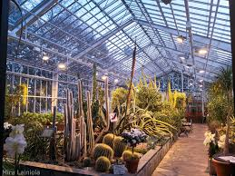

Puutarhat
Kaisaniemen kasvitieteellinen puutarha
"Helsingin ydinkeskustan tuntumassa Kaisaniemessä sijaitseva kasvitieteellinen puutarha (perustettu 1829) ja sen kasvihuoneet tarjoavat ainutlaatuisia elämyksiä luonnonystäville ympäri vuoden. Kaisaniemen kasvitieteellisen puutarhan kasvihuoneet tuovat trooppisen tuulahduksen arjen keskelle."
Katso täältä lisää!Talvipuutarha
"Vuonna 1893 perustettu Talvipuutarha on ollut yli 125 vuotta kaupunkilaisten virkistys- ja kohtauspaikka. Hienostunut eksoottisten kasvien keidas kutsuu viherretkelle kaikkina vuodenaikoina. Kasvien lisäksi kävijöitä ilahduttavat altaassa uiskentelevat karpit."
Katso täältä lisää!Roihuvuoren japanilainen puutarha

"Itä-Helsingissä sijaitseva Roihuvuoresta eli Roihiksesta löytyy kaksi japanilaisuutta henkivää puistoa, Kirsikkapuisto ja Japanilaistyylinen puutarha, joilla kummallakin on oma, mielenkiintoinen tarinansa."
Katso täältä lisää!Annalan puutarha
"Annalan kartanopuisto sijaitsee Vanhankaupungin historiallisesti arvokkaalla alueella. Annalan mäen rakennukset, puutarha, ja harvinaisen laaja tammimetsikkö kertovat historiasta, johon keskeisenä innoittajana ovat olleet kauneuspyrkimykset ja puutarhakulttuuri."
Katso täältä lisää!